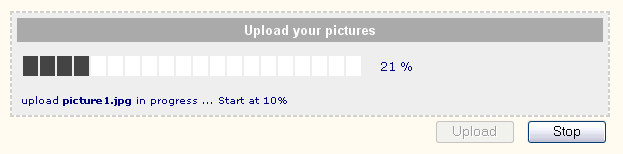

Basic concept
Form and progress bar output are now contained in classes that extend
HTML_QuickForm_Renderer. Design pattern is much easier to manage
and change, and you can choose your favorite template engine.
There are 8 renderers available since release 3.1.1 of QuickForm. The following template engines
are directly suported: Smarty, HTML_Template_Sigma, HTML_Template_IT, HTML_Template_Flexy.
Among these 8 renderers, we will have a look on 3 examples in next chapters :
'default', 'default improved', 'template integration'.
Using Progress Monitor
Default renderer
Without any changes, you may obtains a decent dialog box with a default progress meter
such as :
Default renderer
- <?php
- require_once 'HTML/Progress/monitor.php';
-
- $monitor = new HTML_Progress_Monitor();
-
- $bar =& $monitor->getProgressElement();
- $bar->setAnimSpeed(50);
- $bar->setIncrement(10);
- ?>
- <html>
- <head>
- <title>Progress Monitor - default renderer </title>
- <style type="text/css">
- <!--
- .progressStatus {
- color:#000000;
- font-size:10px;
- }
- <?php echo $monitor->getStyle(); ?>
- // -->
- </style>
- <script type="text/javascript">
- <!--
- <?php echo $monitor->getScript(); ?>
- //-->
- </script>
- </head>
- <body>
-
- <?php
- echo $monitor->toHtml();
- $monitor->run();
- ?>
-
- </body>
- </html>
Default improved renderer
With some class constructor options and a QF renderer, we will improves a lot in few lines,
the decent but poor graphic first example. Enjoy the new result :
Default improved renderer
- <?php
- require_once 'HTML/Progress/monitor.php';
-
- function myFunctionHandler($progressValue, &$obj)
- {
- $bar =& $obj->getProgressElement();
- $bar->sleep();
- if (!$bar->isIndeterminate()) {
- if (fmod($progressValue,10) == 0) {
- $obj->setCaption("myFunctionHandler -> progress value is = $progressValue");
- }
- } else {
- /* in case we have attached an indeterminate progress bar to the monitor ($obj)
- after a first pass that reached 60%,
- we swap from indeterminate mode to determinate mode
- and run a standard progress bar from 0 to 100%
- */
- if ($progressValue == 60) {
- $bar->setIndeterminate(false);
- $bar->setString(null); // show percent-info
- $bar->setValue(0);
- }
- }
- }
-
- $monitor = new HTML_Progress_Monitor('frmMonitor4', array(
- 'button' => array('style' => 'width:80px;')
- )
- );
- $monitor->setProgressHandler('myFunctionHandler');
-
- $progress = new HTML_Progress();
- $progress->setAnimSpeed(20);
- $progress->setStringPainted(true); // get space for the string
- $progress->setString(""); // but don't paint it
- $progress->setIndeterminate(true); // Progress start in indeterminate mode
-
- $ui =& $progress->getUI();
- $ui->setCellCount(20);
- $ui->setProgressAttributes('background-color=#EEE');
- $ui->setStringAttributes('background-color=#EEE color=navy');
- $ui->setCellAttributes('inactive-color=#FFF active-color=#444444');
-
- $monitor->setProgressElement($progress);
- ?>
- <html>
- <head>
- <title>Progress Monitor - default improved renderer </title>
- <style type="text/css">
- <!--
- body {
- background-color: lightgrey;
- font-family: Verdana, Arial;
- }
- .progressStatus {
- color: navy;
- font-size:10px;
- }
- <?php echo $monitor->getStyle(); ?>
- // -->
- </style>
- <script type="text/javascript">
- <!--
- <?php echo $monitor->getScript(); ?>
- //-->
- </script>
- </head>
- <body>
-
- <?php
- $renderer =& HTML_QuickForm::defaultRenderer();
- $renderer->setFormTemplate('
- <table width="450" border="0" cellpadding="3" cellspacing="2" bgcolor="#EEEEEE">
- <form{attributes}>{content}
- </form>
- </table>
- ');
- $renderer->setHeaderTemplate('
- <tr>
- <td style="white-space:nowrap;background:#7B7B88;color:#ffc;" align="left" colspan="2">
- <b>{header}</b>
- </td>
- </tr>
- ');
- $monitor->accept($renderer);
-
- echo $renderer->toHtml();
- $monitor->run();
- ?>
-
- </body>
- </html>
To make it possible, we have changed buttons size and internal QuickForm name
on lines 26 to 29 (class constructor options), and written the
QF renderer on lines 71 to 84.
The progress bar look and feel is defined on lines 38 to 42.
Our user-process which run an indeterminate progress switching back to determinate mode
is defined by the 'myFunctionHandler' function (lines 4 to 24),
linked to the monitor on line 30.
Template engine integration
Using Progress Monitor with a template engine supported by QF rendering system is very easy.
We will show you how to do with ITx (http://pear.php.net/package/HTML_Template_IT).
Example below will simulate a picture upload operation (3 steps: picture 1 at 10%,
picture 2 at 45%, picture 3 at 70%).
 |  |
ITDynamic renderer
- <?php
- require_once 'HTML/Progress/monitor.php';
- require_once 'HTML/QuickForm/Renderer/ITDynamic.php';
- require_once 'HTML/Template/ITX.php';
-
- class my2ClassHandler
- {
- function my1Method($progressValue, &$obj)
- {
- switch ($progressValue) {
- case 10:
- $pic = 'picture1.jpg';
- break;
- case 45:
- $pic = 'picture2.jpg';
- break;
- case 70:
- $pic = 'picture3.jpg';
- break;
- default:
- $pic = null;
- }
- if (!is_null($pic)) {
- $obj->setCaption('upload <b>%file%</b> in progress ... Start at %percent%%',
- array('file'=>$pic, 'percent'=>$progressValue)
- );
- }
- $bar =& $obj->getProgressElement();
- $bar->sleep(); // slow animation because we do noting else
- }
- }
-
- $monitor = new HTML_Progress_Monitor('frmMonitor5', array(
- 'title' => 'Upload your pictures',
- 'start' => 'Upload',
- 'cancel' => 'Stop',
- 'button' => array('style' => 'width:80px;')
- )
- );
- $monitor->setProgressHandler(array('my2ClassHandler','my1Method'));
-
- $progress = new HTML_Progress();
- $progress->setAnimSpeed(50);
-
- $ui =& $progress->getUI();
- $ui->setCellCount(20);
- $ui->setProgressAttributes('background-color=#EEE');
- $ui->setStringAttributes('background-color=#EEE color=navy');
- $ui->setCellAttributes('inactive-color=#FFF active-color=#444444');
-
- $monitor->setProgressElement($progress);
-
- $tpl =& new HTML_Template_ITX('.');
- $tpl->loadTemplateFile('monitor_itdynamic.html');
- $tpl->setVariable(array(
- 'qf_style' => "body {font-family: Verdana, Arial; } \n" . $monitor->getStyle(),
- 'qf_script' => $monitor->getScript()
- )
- );
-
- $renderer =& new HTML_QuickForm_Renderer_ITDynamic($tpl);
- $renderer->setElementBlock(array(
- 'buttons' => 'qf_buttons'
- ));
-
- $monitor->accept($renderer);
- $tpl->show();
-
- $monitor->run();
- ?>
HTML_Progress_Monitor class constructor options (lines 33 to 39)
allows to change buttons name and size, the dialog box title, and the internal QuickForm name.
User-process is now defined by a method-class on lines 6 to 31, and
linked to the monitor on line 40.
The ITx template engine is initialized line 53, and loaded with template
monitor_itdynamic.html
(line 54).
Finally we get the QF renderer on lines 61 to 64.